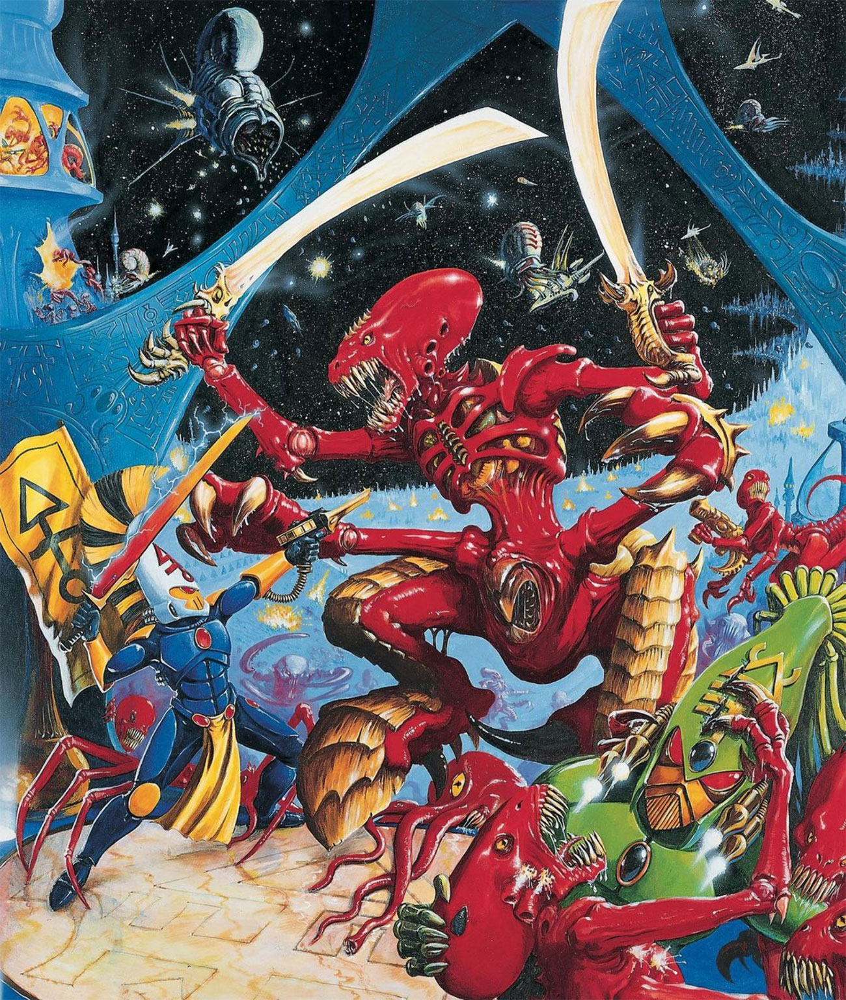
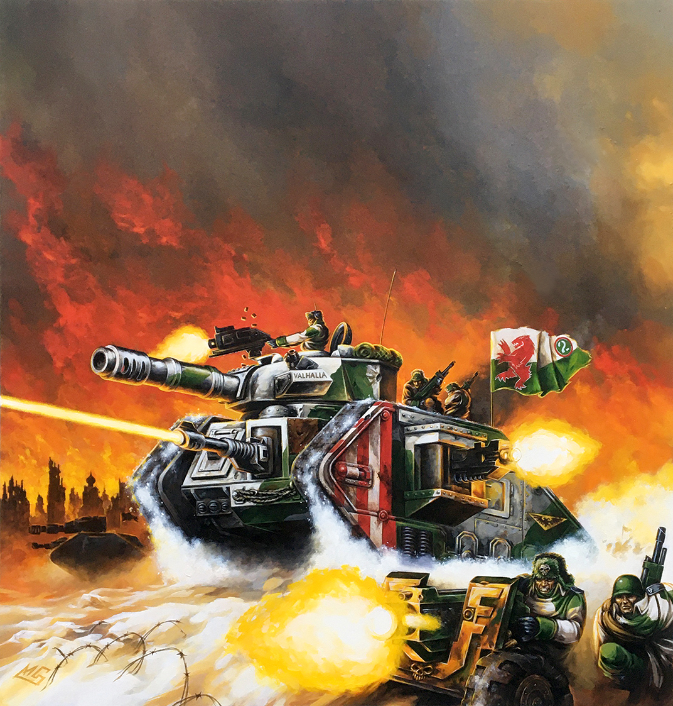

WH40K en Campaña
A continuación encontrarás unas breves reglas para poder jugar una campaña de dos o más jugadores, usando Warhammer 40,000 (3ª edición). Estas reglas son una traducción, con algunos cambios, de "40K in a Flash", publicadas originalmente en la página americana de Games Workshop. Con esta campaña, los jugadores de disputarán el control de territorios y verán sus ejércitos expandirse y ganar experiencia a medida que luchen batallas.
Reclutar Ejércitos
Los jugadores escogen un ejército de 500 puntos. La composición del ejército puede ser modificada entre batalla y batalla. Los tipos y cantidades de tropas que cada ejército puede desplegar están limitados por los territorios que controla el jugador. A medida que el comandante de un ejército expanda sus territorios, también expande su ejército, gana riquezas y se apodera de arcanotecnología. Al inicio, cada jugador debe someterse a las siguientes normas al escoger su ejército:
- Tu ejército no puede exceder los 500 puntos.
- Debes tener al menos una unidad de Tropas de Línea.
- Debes tener al menos una unidad de Cuartel General, pero no más de una (salvo que controles un territorio que te permita más de una opción).
- Puedes gastar hasta un máximo de 50 puntos en equipo de la armería.
- Ninguna miniatura puede tener más de 3 heridas.
- Los Personajes Especiales no son permitidos.
- Ninguna miniatura puede tener una salvación de 2+ o mejor.
- Ningún vehículo puede tener un valor mayor de 200 (salvo que controles un territorio que te permita más de una opción).
- Puedes gastar los puntos restantes en cualquier unidad del Codex, obedeciendo las normas anteriormente mencionadas, y la Tabla de Organización de Ejércitos estándar.
Territorios
A lo largo de la campaña, los jugadores se apoderan de territorios. Estos territorios no solo representan "terreno conquistado", si no que además ofrecen ventajas para expandir tu ejército.
Al inicio de la campaña, cada jugador debe generar tres territorios aleatoriamente. Para generar un territorio, lanza dos D6 uno detrás del otro. El primer resultado representa las "decenas", y el segundo dado las "unidades". Esto te dará un resultado entre 11 y 66. Para ver que territorio has generado, compara el número con la siguiente tabla:
| D66 | Territorio | Descripción |
|---|---|---|
| 11-12 | Base Avanzada | Por cada Base Avanzada que controles, tu ejército puede agregar D3x5 puntos al límite superior de tus puntos de vehículo. |
| 13-14 | Taller de Reparación | Por cada Taller de Reparación que controles, tu ejército puede añadir D3x10 puntos al límite superior de tus puntos de vehículo. |
| 15 | Complejo Industrial | Por cada Complejo Industrial que controles, tu ejército puede añadir D6x10 puntos al límite superior de tus puntos de vehículo más D3x10 puntos adicionales a tu ejército. |
| 16 | Templo | Por cada Templo que controles, tu ejército puede añadir D3x10 puntos adicionales a tu ejército y 5 puntos adicionales de Equipo. |
| 21-32 | Aldea | Si tienes una Aldea bajo tu control, puedes añadir 2D3x10 puntos adicionales a tu ejército por cada Aldea que controles. |
| 33-34 | Pueblo | Si tienes un Pueblo bajo tu control, puedes añadir 2D6x10 puntos adicionales a tu ejército por cada Pueblo que controles. |
| 35-45 | Túnel de Tránsito | Por cada Túnel de Tránsito bajo tu control, tu ejército puede incluir 5 puntos adicionales de Equipo y D6x10 puntos adicionales a tu ejército. |
| 46 | Caché de Suministros | Por cada Caché de Suministros bajo tu control, tu ejército puede incluir 5 puntos adicionales de Equipo. |
| 51 | Depósito de Suministros | Por cada Depósito de Suministros bajo tu control, tu ejército puede incluir 10 puntos adicionales de Equipo. |
| 52 | Tesoro de Arqueotecnología | Por cada Tesoro de Arqueotecnología bajo tu control, tu ejército puede incluir 20 puntos adicionales de Equipo. |
| 53 | Camino | Si controlas un Camino, puedes mover tropas más rápido. Añade D6x10 puntos a tu ejército por cada Camino que controles. |
| 54 | Puente | Si controlas un Puente, puedes mover tropas más rápido. Añade 2D6x10 puntos a tu ejército por cada Puente que controles. |
| 55 | Autopista | Si controlas una Autopista, puedes mover tropas rápidamente. Añade 3D6x10 puntos a tu ejército por cada Autopista que controles. |
| 56 | Teletransportador Industrial | Si controlas un Teletransportador Industrial, puedes mover tropas rápidamente. Añade 4D6x10 puntos a tu ejército. Sin embargo, cada vez que lo uses, tira 1D6; si sacas un 6, pierdes 2D6x10 puntos de tu ejército. |
| 61 | Aeródromo | Si controlas un Aeródromo, tu ejército puede mover más tropas y reparar vehículos grandes. Añade 2D6x10 puntos a tu ejército, 10 puntos de Equipo y D6x10 puntos al límite de tus puntos de vehículo. |
| 62-63 | Tierra Salvaje | Si controlas una Tierra Salvaje, puedes buscar recursos útiles. Añade D3x5 puntos a tu total de Equipo. |
| 64-65 | Ruinas | Si controlas Ruinas, antes de cada partida puedes buscar artefactos psíquicos. Añade D6x10 puntos de Equipo a tu ejército. Si pierdes este territorio, pierdes también los puntos generados. |
| 66 | Valle Perdido | Controlas un Valle Perdido lleno de recursos naturales. Tira dos veces en esta tabla y combina ambos resultados. Un Valle Perdido no puede contener otro Valle Perdido. |
Zona de Control
Depende exclusivamente de los jugadores establecer un límite en la cantidad de territorios que un ejército puede ocupar, dependiendo de cuánto tiempo deseen que dure la campaña y de cuán grandes quieran que sean las fuerzas.
Sugerimos que se permita a los jugadores mantener hasta 12 territorios. Si un jugador gana más de 12 territorios, deberá abandonar algunos territorios (no tiene suficientes tropas para cubrirlos todos), aunque puede elegir cuáles conservar y cuáles renunciar.
Escoger Personajes
Puedes elegir cualquier personaje regular de la lista del ejército (por ejemplo, Capellán, Bibliotecario, etc.), pero debes tener al menos una opción de Cuartel General que lidere tu ejército.
Personajes Especiales
En una campaña, a menudo es una buena idea dejar a los Personajes Especiales en el Codex y dejar que tus propios personajes se desarrollen a medida que avanza la campaña.
Si los jugadores desean incluir Personajes Especiales, solo se pueden incluir si el jugador posee suficiente territorio para calificar para el personaje especial y el equipo que lleva.
Luchando Batallas
Los jugadores tienen la libertad de luchar entre sí como quieran, lo que representa escaramuzas a lo largo de sus fronteras comunes, intrusiones en el territorio de sus rivales e invasiones directas. La cantidad de territorios que posee cada jugador indica el tamaño y el poder de su facción. Cuantos más territorios tenga un jugador, mayor y mejor será su ejército.
Cuando se inicia una batalla, ambos jugadores deben apostar uno de sus territorios. Cada jugador nombra el territorio que se apostará antes de que comience la partida. Una vez que la partida haya terminado, genere un territorio adicional a partir del cuadro de territorios que se muestra arriba.
El Campo de Batalla
El territorio apostado puede usarse como base para determinar el terreno del campo de batalla si los jugadores lo desean. Por ejemplo, si un jugador marca una base avanzada y su enemigo marca una tierra salvaje, entonces la tabla podría incluir una base militar en una zona desolada o boscosa.
Si se utiliza el generador de terreno aleatorio para configurar la mesa, se permite que cada jugador coloque un elemento que represente su territorio en lugar de tirar los dados al azar. Recuerda que la batalla es un enfrentamiento a lo largo de la frontera común de los jugadores, a través de Territorios controlados por los jugadores.
Conquistar Territorio
El jugador que gane la partida conservará su territorio original y seleccionará uno de los dos territorios restantes para añadirlo al suyo. Esta selección consistirá en el territorio de su rival o el nuevo generado a partir de la tabla de territorios. El perdedor se quedará con el territorio que le quede.
Si el ganador se queda con el territorio de su rival, se supone que el perdedor se ha visto obligado a regresar al territorio recién generado. Si el ganador se queda con el territorio recién generado, entonces se ha librado una batalla para determinar quién poseerá esta nueva tierra.
En caso de empate, ambos bandos conservan sus territorios y el jugador con la menor cantidad de territorio obtiene el territorio recién generado. Si ambos jugadores tienen la misma cantidad de territorio, tira un D6 para decidir quién obtiene el territorio recién generado.
Guerrilla
Si un jugador tiene al menos el doble de territorio que su oponente, entonces su enemigo se considera una "guerrilla". Las siguientes reglas ayudan a proteger a estos jugadores, y también a alentar a los jugadores a luchar contra oponentes con un tamaño de ejército similar.
Si un jugador es una guerrilla, puede atacar las tierras de su enemigo. Una incursión se lleva a cabo exactamente como en cualquier otra partida, excepto que ambos ejércitos están limitados al mismo valor máximo de puntos, establecido por la guerrilla. El valor de puntos no puede ser inferior a 500 puntos y puede ser tan alto como el ejército completo de la guerrilla.
Como la guerrilla realiza una incursión sorpresa en territorio enemigo, puede elegir qué territorio debe atacar su enemigo. ¡Obviamente, la guerrilla elegirá los mejores objetivos para atacar!
Veteranía
Al final de la batalla, cada jugador puede escoger una unidad superviviente para otorgarle un Honor de Batalla. Lanza 1D6 y compara el resultado con la tabla de Honores de Batalla correspondiente (consulta la página 163 del reglamento de Warhammer 40.000). Una unidad puede acumular dos o más Honores de Batalla si sobrevive dos o más partidas (vuelve a tirar si generas un Honor de Batalla repetido).
La unidad perderá sus Honores de Batalla si es completamente destruida en una batalla, o si el jugador modifica o elimina dicha unidad al escoger el ejército para la siguiente partida.
Finalizar de la Campaña
Decide con tus jugadores cuanto tiempo durará la campaña (un fin de semana, dos meses, medio año...). Al final del tiempo escogido, el jugador que controle más territorios es el ganador.